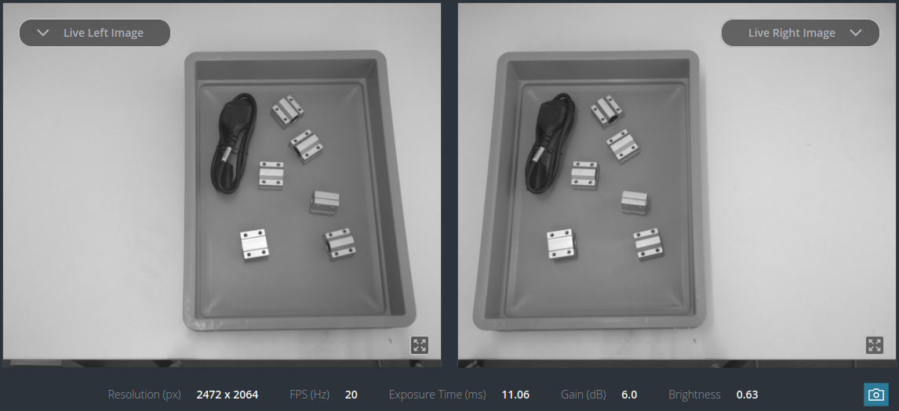
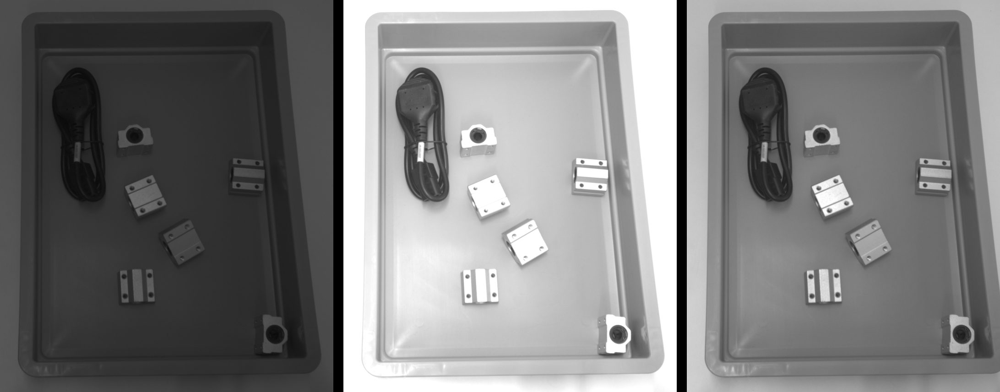
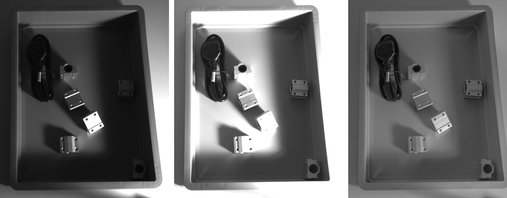
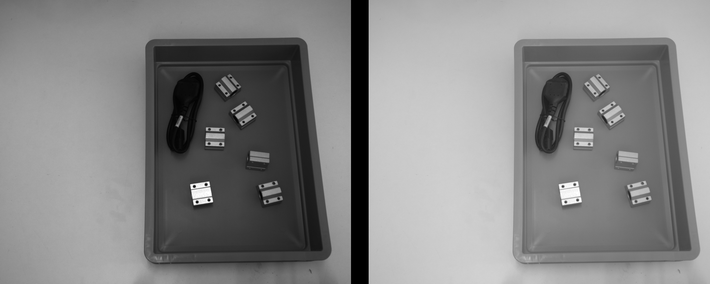

Tuning of camera images¶
Camera images are the source for depth image computation and for all rc_reason modules. Therefore, this is the first thing to check before tuning other modules.
In addition to improving the image quality, some settings help to reduce the image acquisition time. This tutorial discusses both aspects separately and explains how they influence each other.
Before we start¶
This tutorial focuses on the rc_visard, rc_visard NG and rc_viscore cameras. The cameras may be operated standalone or by an rc_cube or rc_reason_stack as the computing device.
- The camera or computing device must be running and connected to a network or directly to a computer. See Network configuration for details about network setup.
- The Web GUI should be opened in a web browser. This can be done with the discovery tool from Roboception.
- The device should have the latest firmware (version 26.07). The firmware version can be verified on the page of the Web GUI.
This tutorial explains how to set the parameters using the Web GUI. The parameters can also be set via GigE Vision 2.0/GenICam image interface and the REST-API interface.
Note
All parameter changes are applied immediately and persist across reboots.
Improving image quality¶
The Camera page of the Web GUI shows the left and right images and allows the parameters to be changed. Below the images is a line with important values, such as the current image brightness, which ranges from 0 to 1.


Fig. 1 Left and right camera images on the Camera page of the Web GUI with status values below.
The main goal of camera image tuning is to avoid under- and overexposure. Underexposed images appear dark. This makes it difficult to distinguish objects, because the contrast is reduced. Overexposed images appear bright. In overexposed areas, it is impossible to distinguish objects, because the pixel values are saturated and provide no useful information.


Fig. 2 Images with under-, over- and good exposure.
Note
While underexposure should be avoided, preventing overexposure is a much higher priority!
Image brightness can be adjusted manually by setting the exposure time and gain. The exposure time is the duration during which light from the scene is collected; higher values increase the image brightness and are typically in the range of a few milliseconds. If there is less light in the scene, a longer exposure time is required. However, long exposure times cause blurring if objects in the scene move, or if the camera itself moves. The second parameter that influences the image brightness is the gain, which amplifies the signal from the chip and makes the image appear brighter, but also increases image noise. An increase of 6 dB doubles the brightness; ideally, the gain should be 0, but small values such as 6 dB are often acceptable. Whenever possible, it is recommended to increase the exposure time and add more light rather than increasing the gain.
However, adjusting these parameters manually is often impractical, because changes in object brightness within the scene and in the environmental lighting can rarely be avoided and lead to under- or overexposure unless the parameters are continuously readjusted. The following two sections explain how to address this with the high dynamic range or auto exposure functions.
High dynamic range (HDR)¶
High dynamic range (HDR) is a technique that expands the range of luminance between the darkest and brightest areas of an image. It is implemented by taking several images with different exposure times and automatically combining them to avoid under- and overexposure.
Note
HDR is an easy and robust way to ensure good image quality for further processing, but it significantly increases the acquisition time, because several images have to be captured and processed for each HDR image. HDR is also not suitable if the scene changes during image capture, e.g. when observing objects on a conveyor. An alternative in that case is auto exposure.
The only additional parameter for HDR is Gain. It may be needed if the environmental lighting is insufficient and cannot be increased. The value should be chosen so that the reported image brightness is around 0.5.
Note
The brightness reported when HDR is turned on is the brightness of an image with an exposure time of 3-4 ms, not the brightness of the final HDR image. HDR also uses images with exposure times that are much shorter and much longer than 3-4 ms to compensate for under- and overexposure. Reporting the brightness this way makes it possible to find a gain setting for which HDR is most effective.


Fig. 3 Images under challenging lighting conditions. The left image was taken with auto exposure at the default minimum brightness of 25%; it is underexposed due to the reflection on one of the objects. In the middle image, the exposure time was increased manually to avoid underexposure, which leads to complete overexposure of some objects. The right image was taken under the same lighting conditions, but with HDR. It is automatically well exposed everywhere.
Auto exposure¶
If HDR cannot be used because of the image acquisition time or dynamic scenes, the auto exposure should be chosen instead. The auto exposure continuously analyzes the image brightness and overexposure, and adjusts the exposure time and gain within the limits defined by the settings below.
The Max Exposure Time defines the maximum time that the auto exposure is allowed to use for exposing the image. Above this limit, the auto exposure increases the gain instead, if necessary, to raise the image brightness. For static scenes, this limit should be left at its default, e.g. 18 ms for the rc_visard. For dynamic scenes, e.g. when observing a conveyor, the exposure time may need to be limited, e.g. to 5 ms, depending on how quickly the scene changes, in order to reduce motion blur.
If a random dot projector is used to support stereo matching, the Auto Exposure Mode should be set to AdaptiveOut1. With this setting, the auto exposure monitors the increase in brightness caused by the random dot projector and takes it into account to avoid overexposure in images with projection.
Note
The auto exposure mode Out1High only considers images with projection. This can be useful if scene changes between two depth acquisitions with projection should be ignored — for example, if a robot moves through the image and the auto exposure should not waste time adapting to it. However, in almost all situations AdaptiveOut1 is the best choice when using a random dot projector.
The Min Brightness and Max Brightness settings define the range within which the auto exposure is allowed to set the brightness of the image. If overexposure is detected, the brightness is reduced, but not below the defined Min Brightness. If the current brightness shown below the images is at this limit, it indicates that the scene still contains significant overexposure. Overexposure can be reduced by changing the external lighting (e.g. no spotlight, more diffuse light, or light from multiple directions), by reducing Min Brightness, or by using HDR.
Finally, the auto exposure can be restricted to a certain Exposure Region of the image. This region can be specified in the Web GUI by clicking Select region in image and drawing a rectangle on the left camera image; once specified, it is shown as a rectangle overlaid on the left camera image in the Web GUI. The auto exposure then ignores brightness and overexposure outside this region. This is useful if the workspace is smaller than the camera’s field of view, since it avoids optimizing the image brightness for irrelevant parts of the scene.
Gamma¶
The gamma function makes it possible to increase the brightness of dark parts of the image without overexposing bright parts. The optimal value depends on the camera. Useful values lie between 0.5 and 1. In most cases, the default is sufficient. If the relevant part of the image appears too dark, the value can be lowered. However, values below 0.5 are discouraged. It is best to choose a value that makes the image look natural.


Fig. 4 The left image was taken with Gamma 1, which maps irradiance linearly. The right image was taken with Gamma 0.5, which leads to much better contrast everywhere. The best value depends on the camera type.
Color cameras¶
Color cameras additionally offer a white balancing function, which adjusts the colors so that white or gray parts of the scene appear white or gray rather than tinted. This is difficult, because the perceived color depends not only on the color of the object surfaces, but also on the color of the light source(s), which is often hard to control.
By default, an automatic white balancing function estimates and adjusts the color settings. If color accuracy matters for custom image processing functions, it is recommended to control the light sources and adjust the color settings manually.
Reducing image acquisition time¶
The acquisition time is often also relevant for reducing the overall latency. There are several recommendations, depending on the choices already made for tuning the image quality.
The frame rate should be set to the maximum that the camera supports. This is the default.
If HDR is used, auto exposure should be considered as an alternative, since it significantly reduces the acquisition time: HDR needs to capture several images, whereas auto exposure relies on a single image. If HDR is required, e.g. for robustness, it is recommended to enable software triggering instead. This way, an rc_reason module that needs images can trigger the acquisition itself, rather than waiting for the next image to be captured automatically during continuous acquisition.
Note
Triggering is not supported on rc_visard cameras. It is supported on rc_visard NG and rc_viscore.
Software triggering can also be useful together with auto exposure. However, images may be captured under- or overexposed if the lighting or scene changes significantly between two triggers. This can be handled by the stereo matching module, which automatically re-triggers acquisition in such cases, although this naturally takes extra time (see Ensure proper acquisition). Whether to combine triggering with auto exposure depends on the application, but in most cases it is better to let the camera capture images continuously at the maximum frame rate when using auto exposure.